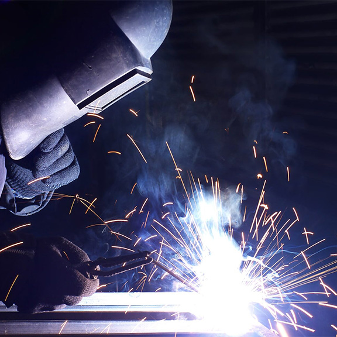

Things I’ve Tried
-
FDM 3Dprinting
FDM 3D printers are the most common type of 3D printer, they work by heating up plastic filiment and dipositing it layer by layer until a 3D object has been formed.
-
Lathe
Lathes are essentially motor and gearbox that has a clamp on the end of it. The material you want to shape is held by the clamo and spun an high speed so a cutting tool can carve away at it.
-
CNC machine
CNC machines are another type of machine that uses a computer to plan out cutting paths for various tools that can cut shapes out of stock material.
-
SLA 3D printer
An SLA printer uses a thermoset resin to make 3d objects by carefully curing each layer at a time using a UV laser, this process looks like an objects slowly raising out of a pool of glowing liquid and is quite fun, however the post processing is much more complex and time consuming.
-
Sanding
sanding is a fine finishing abraisive process that is used to smooth out rough spots in various materials like wood and metal, it can be done by hand or by machine.
Things I Want to Try
-
Injection moulding
Injection moulding is a large scale manufacturing method that uses high pressure to force molten plastic into molds. it is incredibly expensive and hard to set up but super consistant and reliable in the long run
-
Metal casting
Metal casting is the process of pouring molten metal into a mold and letting it cool down. it is not super efficient in the large scale but can be pretty good at getting the rough shape of an object, which can then be machined into the final product.
-
Forging
Forging metal is the process of heating up a piece of stock material in a furnace untill it is malliable. a blacksmith will then shape the material with tools like hammers and wedges. It can be done by both hand and machine.
-
Welding

Welding is the process of fusing two pieces of metal together by melting the material itself or a piece of filler material that fuses with both parts. it can be automated but many applications still require manual labor. -
Slip casting
I don't know too much about slip casting but it is similar to rotational moulding with plastic. Slip casting is when you have a plaster mold and spin it with a ceramic inside so it coats the entire surface, leaving a hollow model.